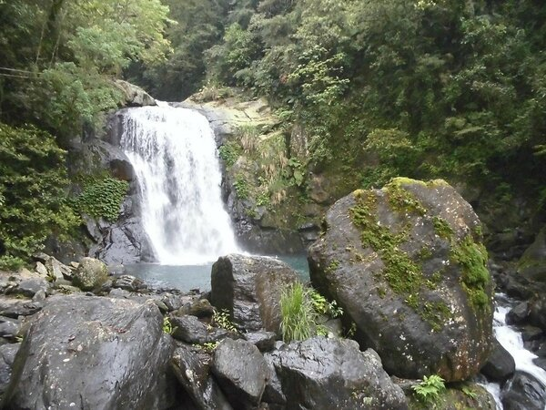
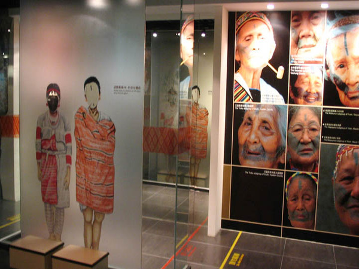
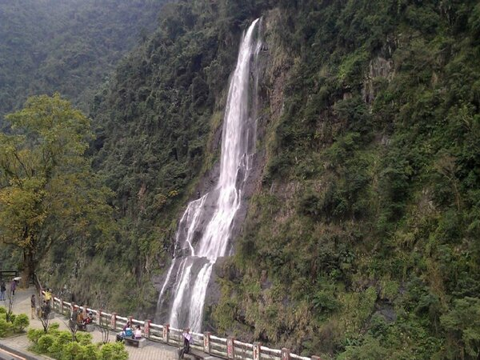

內洞國家森林遊樂區位於台灣新北市烏來區信賢里內，面積約有1,191.34公頃，標高約在230－800公尺。
相傳是該谷多有青蛙叫聲，故舊稱娃娃谷，乃「哇哇」音變而來。特點為林相豐富且多變化，步道內頗多生態變化。
區內最著名之內洞瀑布，因河床坡降連續變形而成，並以每階梯三層瀑布拾級而下。因為蘇迪勒颱風而嚴重毀損，於2018年9月15日重新開放。


烏來老街指的就是烏來街、瀑布路與環山道路一帶，店家招牌樣式統一，看起相當整齊，而且大部分的商店都以原住民特色來發揮，所以遊客可以品嚐到原住民風味的山產美食，像是碳烤山豬肉、溫泉蛋、月桃飯、竹筒飯、馬告料理、山蘇、珠蔥等，都是其他地方少見的原住民風味料理。
另外還有小米酒、小米麻糬等特產，也都很適合送給親朋好友當伴手禮。同時在這裡也可以觀賞到山地歌舞表演，感受原住民的熱情活力。
泰雅文化也是老街的旅遊重點，走一趟泰雅民族博物館可以了解族人豐富的編織、建築、信仰文化，還可品嘗老街上眾多原住民美食。
若想親近自然風光，不妨搭乘烏來臺車，欣賞體驗沿途山林風光，或是登上高空纜車，近距離欣賞瀑布與山嵐。

新北市烏來泰雅民族博物館即是展現此地原住民族歷史曾經的最佳舞臺。

座落於烏來商圈入口處，地上3層建築物，以泰雅原住民族的歷史淵源、傳統人文風貌、生活習俗、宗教信仰及祭典節慶等內容，將烏來泰雅族的歷史、自然生態、文化風華一網打盡。
讓人看完後更加了解泰雅民族的生活及文化。
烏來瀑布位於新北市烏來區烏來風景特定區內，是烏來風景特定區的代表景觀之一。
烏來瀑布高達80公尺、寬約10公尺，在日據時代舊稱為「雲來之瀧」的美譽。 遠望瀑布有如白鍊一樣，當雨量充沛時烏來瀑布會分成兩道飛泉，自山谷撲簌而下，形成烏來天空雲霧瀰漫，增添浪漫的氣息，若在炎炎夏日來到烏來瀑布欣賞水景，讓人心情舒暢。

啦卡路位於烏來桶後溪沿岸，啦卡(Laga)之名，是泰雅語楓樹的意思。

當年在此山林間生長著許多的楓樹森林，因此泰雅族人稱此區域為Laga。
烏來啦卡步道，為從烏來啦卡路9巷通往內洞林道的登山步道，屬於前往內洞林道的道路，也是觀光局評選的台灣十大國際級賞鳥區之一的賞鳥步道。

 333桃園市龜山區德明路5號
333桃園市龜山區德明路5號 TEL:(03)1234-5678
TEL:(03)1234-5678 EMAIL:123456789@gmail.com
EMAIL:123456789@gmail.com